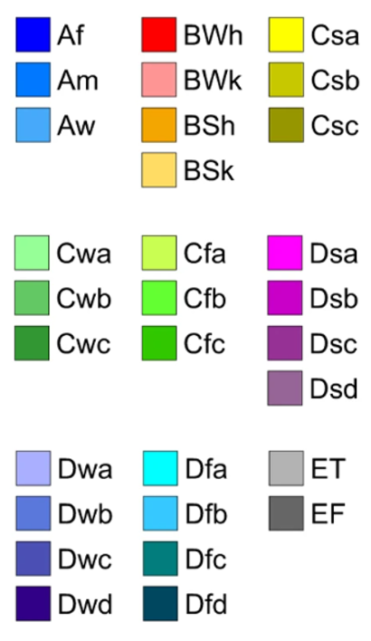

Köppen-Geiger climate classification
Reference: https://www.nature.com/articles/sdata2018214
This review provides a comprehensive overview of the advancements in remote sensing techniques applied to badlands, highlighting their respective contributions across varying environmental contexts. It synthesizes findings from 96 peer-reviewed studies identified through a systematic search in the Web of Science and Scopus databases, following the PRISMA methodology.
This research was conducted within the RETURN Extended Partnership project and received funding from the European Union Next-GenerationEU (National Recovery and Resilience Plan—NRRP, Mission 4, Component 2, Investment 1.3—D.D. 1243 August 2, 2022, PE0000005).